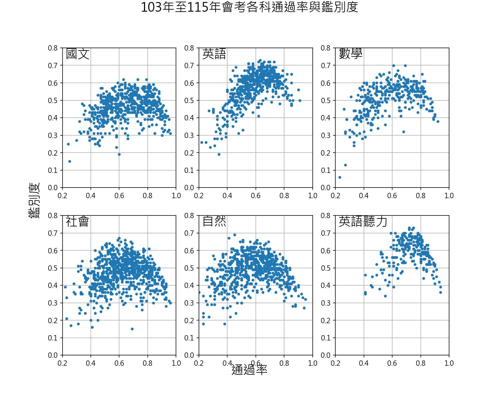

學生自主複習與檢測的絕佳工具。支援依「章節主題」或「會考年度」篩選試題，提供即時評分、秒答解析與標記錯題的反饋機制。
以生物學科為核心，整理完整的歷年試題庫。提供依「章節概念細分」與「考試年度排列」的雙排版整理網頁，便於老師下載、列印與教學準備。
結合大數據分析與視覺化技術。展示歷屆會考題目的「通過率」與「鑑別度」散佈分布，支援多學科切換，點擊 Play 即可探索指標的演變動態。

國中教育會考各科通過率與鑑別度之分布趨勢圖 (累計 103 年至 115 年數據)